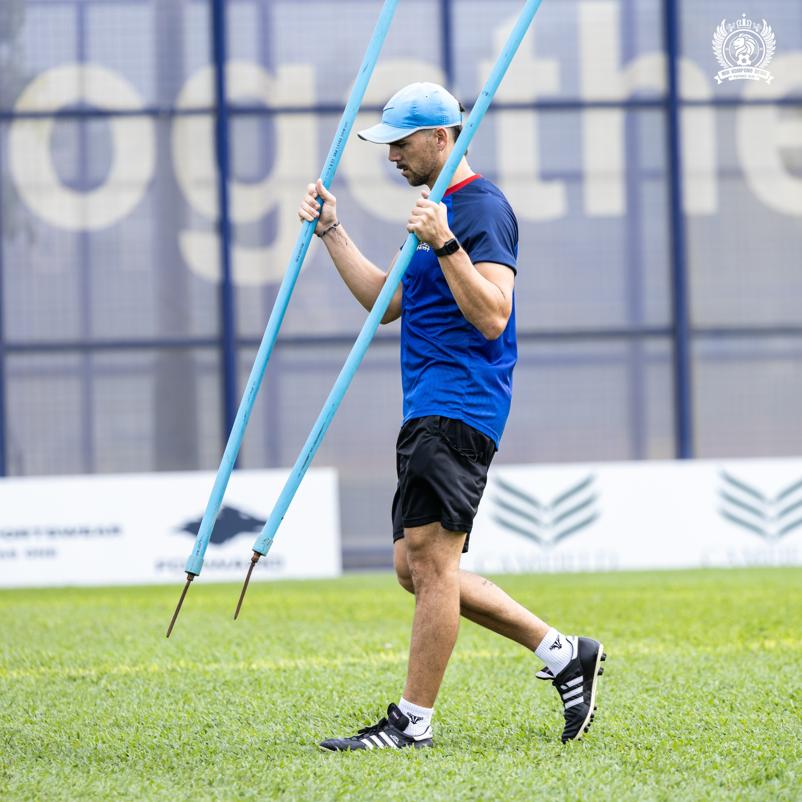

De Uruguay al mundo.
Crecí en Uruguay y, antes que nada, fui jugador. El fútbol fue lo mío desde muy chico, y estudiar Educación Física fue la manera de quedarme dentro del deporte cuando dejé de jugar: seguir, ahora desde el otro lado de la raya.
Siempre tuve la necesidad de dar un paso más, sobre todo en lo científico aplicado a los deportes de equipo. En algún momento entendí que lo que había aprendido era demasiado lineal para un juego que no lo es, y empecé a buscar una mirada más amplia y más profunda del entrenamiento.
Esa búsqueda me sacó de casa. Dejé la comodidad de lo conocido para crecer —como profesional, pero sobre todo como persona— y abrir la cabeza. La inquietud y la incomodidad terminaron siendo mi motor: cada vez que me sentí cómodo, busqué el siguiente lugar.
En el camino tuve la suerte de cruzarme con grandes personas, culturas y contextos muy distintos al mío. De cada uno me llevé algo. Más que una carrera, lo vivo como una forma de entender el deporte: moverme para seguir aprendiendo.
